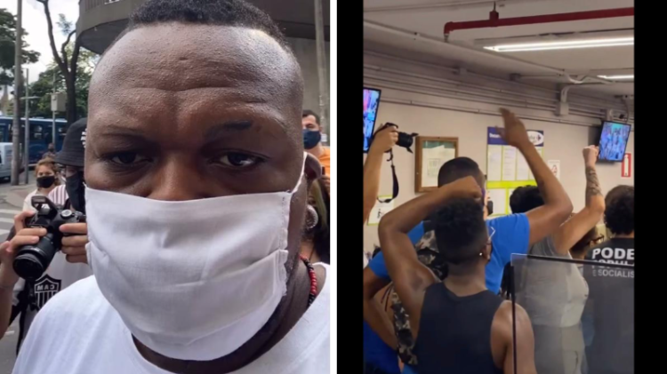

20 de novembro de 2020
Um grupo de manifestantes se reuniram na porta de uma unidade do Carrefour em BH nesta sexta-feira. Os manifestantes também entraram no estabelecimento para um protesto pacífico enquanto carregavam placas e gritos de “Assassinos” e “Racistas”.
O rapper Djonga foi uma das pessoas que participaram do protesto, que foi convocado nas redes sociais após o espancamento que levou à morte de um cliente negro em uma unidade do supermercado Carrefour em Porto Alegre (RS). João Alberto Silveira Freitas, de 40 anos, foi agredido e morto por seguranças.
Na noite de ontem (19), véspera do Dia da Consciência Negra, mais um caso de racismo inacreditável aconteceu. Dessa vez, um homem negro de 40 anos, identificado como João Alberto Silveira Freitas, morreu após ser espancado por dois seguranças brancos na porta de um supermercado Carrefour em Porto Alegre.
Os dois homens foram detidos e presos em flagrante pelo homicídio qualificado de João Alberto. O vídeo do crime viralizou nas redes sociais e gerou revolta em milhares de pessoas. Muitos estão pedindo um boicote nacional ao supermercado, algo que Mano Brown defendeu antes de Emicida também se juntar ao movimento.